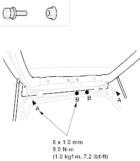
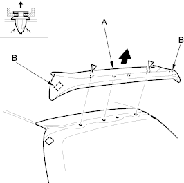

NOTE: Put on gloves to protect your hands.
- Remove the tailgate upper trim (see page 20-32).
- Remove the high mount brake light, refer to the '01 Civic Shop Manual on this CD (see page 22-120).
- From inside the tailgate, remove the bolts (A) and nuts (B).
Fastener Locations
A  : Bolt, 2 B
: Bolt, 2 B  : Nut, 2
: Nut, 2

- From inside the tailgate, release the clips, while pulling the tailgate spoiler (A) away and release the fasteners (B), then remove the spoiler. Take care not to scratch the body.
Fastener Locations
 : Clip, 2
: Clip, 2

- Install the spoiler in the reverse order of removal and replace any damaged clips.